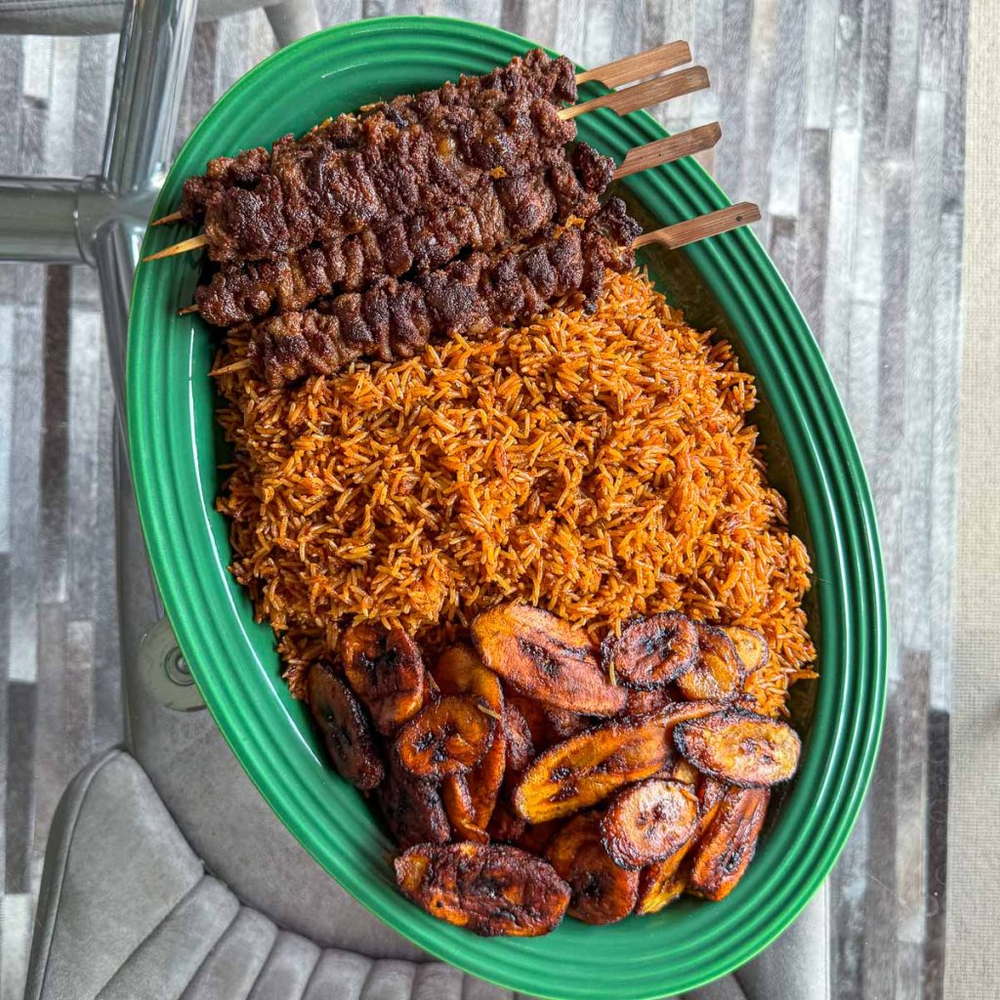

Jollof Rice recipe

Jollof rice is a popular west African food. The Ghanaian version is genrally considered best
Ingredients
The following are the Ingredients we'll be using in this recipe. Get to know them
Red bell pepper: Adds a touch of sweetness to balance the spice.
Vine tomatoes: Fresh, juicy tomatoes are essential for the sauce’s base.
Red onion: A milder, slightly sweet onion, perfect for building flavour.
Red scotch bonnet chillies: These pack heat—adjust to your spice level preference.
Garlic: Adds depth and an aromatic punch.
Fresh ginger: Sharp, zesty, and essential for a fragrant sauce.
Vegetable oil: Used to sauté the onions and purée.
Double concentrated tomato purée (DeRica): The star of the sauce, giving it a rich, tangy base.
Curry powder: Adds warmth and complexity.
Dried thyme: Earthy and herbal, balancing the tomato and spice.
Chicken stock cubes: Enhances the depth of flavour in the sauce.
Dried bay leaves: Infuse the dish with subtle, savoury aromas.
White basmati rice: A lighter, fluffier rice, perfect for absorbing the rich sauce.
For the base:
- 1 large red bell pepper, cut into small pieces
- 2 medium vine tomatoes, cut into small pieces
- 1 red onion, quartered
- 2 red scotch bonnet chillies, quartered
- 3 garlic cloves, smashed
- 25g fresh ginger, peeled and roughly chopped
- 100ml water
For the Rice:
- 150ml vegetable oil
- 1 red onion, finely chopped
- 150g double concentrated tomato purée (we use DeRica)
- 1 tbsp curry powder
- 2 tsp dried thyme
- 3 chicken stock cubes
- 2 dried bay leaves
- 600ml water
- 600g white basmati rice
Steps!
- Place the base ingredients in a blender and blitz until smooth.
- Heat the vegetable oil in a large Dutch oven set over a medium heat. Add the onion and cook, stirring occasionally, for 3 minutes, then add the tomato purée and cook, stirring frequently, until it begins to darken, 3 to 5 minutes.
- Pour in the blended base, stir to combine and bring to a simmer. Reduce the heat to medium-low and partially cover the pot with the lid – it will splatter! Cook, stirring occasionally, until the sauce is reduced by about a third of its original volume and the oil begins to separate from the sauce, 12 to 15 minutes.
- Stir in the curry powder, thyme, stock cubes, bay leaves and water. Season generously with salt and pepper, to taste, then cover and bring to a boil over medium-high heat.
- Meanwhile, rinse the rice thoroughly with cold water until the water runs clean, then drain. Add the rice to the sauce and stir to combine. As soon as it comes to a boil, reduce the heat to low, cover the pot and cook for 25 minutes.
- By this point, the rice should have absorbed all the liquid and be cooked through. Remove the bay leaves, give the rice a stir and you’re ready to serve, preferably with grilled chicken and fried plantain.
Homepage